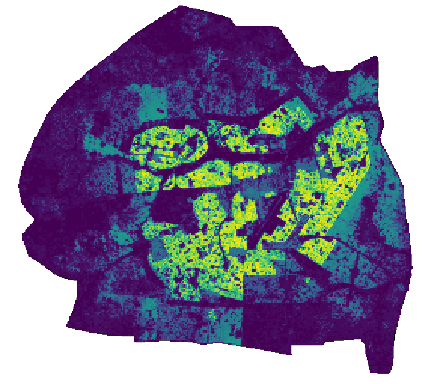

Figure: weighting layer
Figure: weighting layer

Figure: Feature importances
Random Forest's explanatory variables (i.e. covariates, predictors) are essentially the proportion of each class of a land cover map (land_cover parameter). Optionally, other variables can be added to the model. It includes proportion of any other raster's class (like land use map...) passed through the raster parameter, and/or a raster of distance to the nearest point of interest (e.g. distance to the nearest road, school, hospital, university...) passed through the distance_to parameter.
The administrative units should be provided as a vector layer using the vector parameter. Regarding to the attribute table connected to this vector layer, a column containing a unique identifier should be specified via the id parameter and the column containing the value to be used as response variable (population count or any other response variable) via the population parameter.
It is possible not to use all the classes whether for the land cover map or for the optional raster. For that purpose, a list of classes to be used should be specified via the lc_list parameter (for land cover map) or the raster_list parameter (for an additional map).
The out-of-bag error of the model is printed in the console and give an indication about the internal accuracy of the model (cross-validation on training set at the administrative units level). Features importance in the model are ploted in a graph, whose name have to be specified via the plot parameter.
The add-on support parallel processing. The number of cores to be used should be specified via the n_jobs parameter.
As the model is trained to predict the napierian logarithm of the response variable, it is mandatory to not have zero or negative values in the column containing the response variable. It is also expected that the response variable column does not contain NULL values. For the same reason, the model is unable to predict a zero weight value. The implementation of the add-on is designed so that if a predicted weight is smaller than 0.0000000001 obs./m² the value in the weighting layer will be set to 0. It is possible to force weighting layer's grids with a value of zero if a specific class (specified via the built_up_category parameter) is absent in those grids.
TODO: Add list of Python libraries dependencies and instruction about how to install them in the GRASS GIS's Python
# Generate a weighting layer using land cover map r.population.density.py vector=admin_level_4 land_cover=my_landcover_map tile_size=100 id=CAT population=pop_tot output=weighting_raster_100m plot=/home/user/importance_plot n_jobs=4 # Generate a weighting layer using land cover map and land use map r.population.density.py vector=admin_level_4 land_cover=my_landcover_map raster=my_landuse_map tile_size=100 id=CAT population=pop_tot output=weighting_raster_100m plot=/home/user/importance_plot n_jobs=4 # Generate a weighting layer using land cover map, land use map and distance to nearest school r.population.density.py vector=admin_level_4 land_cover=my_landcover_map raster=my_landuse_map distance_to=nearest_school tile_size=100 id=CAT population=pop_tot output=weighting_raster_100m plot=/home/user/importance_plot n_jobs=4 # Generate a weighting layer using only category 3,4 of land cover map, category 8,9 of land use map and distance to nearest school r.population.density.py vector=admin_level_4 land_cover=my_landcover_map raster=my_landuse_map distance_to=nearest_school tile_size=100 id=CAT population=pop_tot output=weighting_raster_100m plot=/home/user/importance_plot lc_list=3,4 raster_list=8,9 n_jobs=4